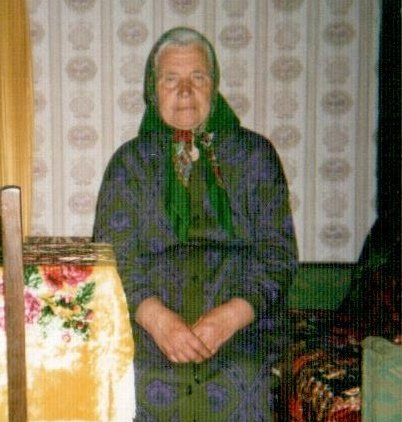
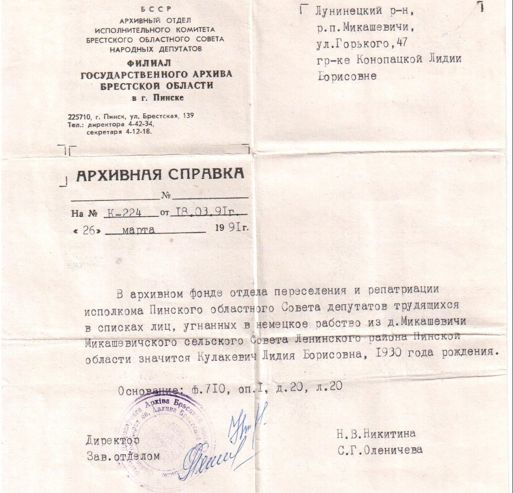
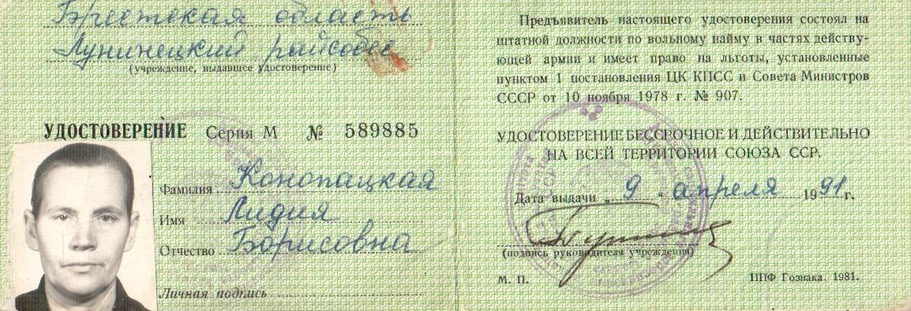
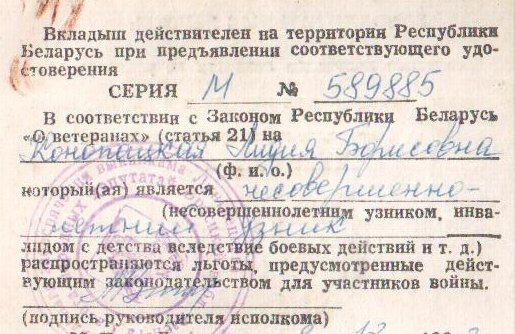

Конопацкая (Кулакевич) Лидия Борисовна
🏡 1. Семья и довоенное детство
Отец, Борис Павлович Кулак, умер от тяжелой болезни в 1942 г. Мама, Ольга Прокоповна, осталась с семью детьми: Елена, Ева, Константин, Евдокия, Иван, Иосиф, Лидия и Владимир. Православная верующая семья.
⚡ 2. Начало войны и оккупация родного края
В 1942 г. нацисты сожгли южную часть Микашевичей. После уничтожения еврейского населения семью Кулакевич переселили в пустующий дом на Болотной улице, где дети спали на полу. Старший брат Костя держал связь с партизанами.
⛓️ 3. Облава, арест и отправка в эшелонах
В ноябре 1942 г. фашисты оцепили Микашевичи. Мать с детьми ушла в лес, но 12-летняя Лида с подругой Олей ночевали у старшей сестры на ул. 17 Сентября. Утром девочек схватили. Местный солтус Лисовский предлагал Лиде удочерение ради спасения, но девочка надеялась, что её отпустят. В Лунинце группу людей вывезли к расстрельной яме — расстрел в последний момент отменила русская переводчица, уговорившая офицера отправить людей в рабство. Маме сообщили, что Лиду расстреляли.
🌾 4. Рабский труд, испытания и лагеря Германии
Через тюрьму Пинска и товарные вагоны Лиду доставили в центр Берлина в лагерь у Бранденбургских ворот. Узники обслуживали ресторан и отель фрау Пэрстки. Носили нашивки «OST». Лифтёрша ресторана тайком прятала для 12-летней Лиды объедки, спасая от голодной смерти. При бомбежках Берлина обрушивались этажи, Лида расчищала битый кирпич и красила стены.
🕊️ 5. Освобождение союзными и советскими войсками
Три недели в апреле 1945 г. прятались в бункере у реки Шпрее без еды между линиями фронта. 4 мая 1945 г. освобождены советскими бойцами. Лидию зачислили в армейский прачечный отряд на Эльбе, где она проработала полгода. В ноябре 1945 г. после проверки вернулась в Микашевичи — мать от потрясения не сразу узнала повзрослевшую дочь.
🌱 6. Возвращение на пепелище и мирный труд
Окончила вечернюю школу, трудилась счетоводом поссовета (10 лет), статистиком в сельпо (15 лет) и 10 лет на железной дороге. В 1952 г. вышла замуж за Конопацкого Владимира Игнатьевича, родила троих детей (Валентина, Михаил, Тамара).
📷 Фотографии и архивные документы (4)
Фото 10. Конопацкая Л. Б., 21.04.2013 год

Фото 11. Архивная справка Кулакевич Лилии Борисовне (Госархив Брестской области в г. Пинске)

Фото 12. Удостоверение узника нацизма № 589885 Конопацкой Лидии Борисовне

Фото 13. Вкладыш удостоверения несовершеннолетнего узника нацизма